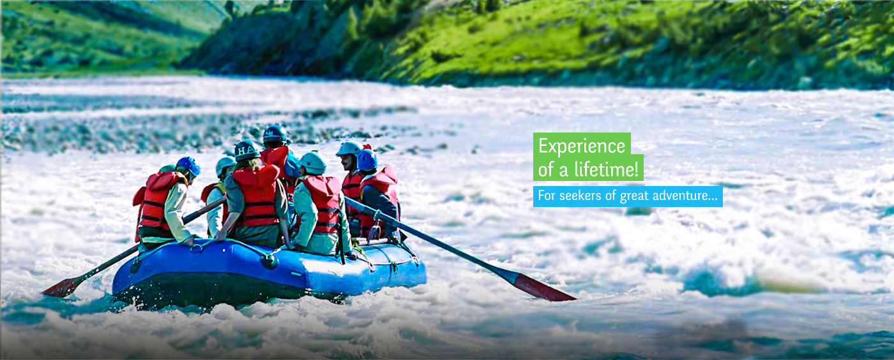

Adventure Sports Activities Organized in Himachal
| Activity | Prominent Locations |
|---|---|
| River Rafting | Bias River Manali, Spiti River in Spiti valley, Sutlej near Shimla, Ravi near Chamba and Chandra in Lahaul |
| Still Water Sports | Gobind Sagar Lake Near Bilaspur, Chamera Lake Near Dalhousie and the Pandoh Lake on the Mandi-Manali highway |
| Mountain Cycling | Kangra, Una, Hamirpur and Bilaspur |
| Para Gliding | Bir-Billing in Kangra, Solang valley Near Manali, Bundla Dhar Near Bilaspur |
| Angling | Angling |
| Trekking | Dhauladhar and Pir Panjal ranges, Between Shimla and Kullu, Lahaul & Spiti Valley |
| Skiing | Solang Valley, Kufri and Narkanda |
| Heli Skiing | Hanuman Tibba, Rohtang Pass, Deo Tibba and Chandrakhani Pass near Manali |
| Mountaineering and Rock Climbing | Reo Purgyil, Jorkanden, Rangrik Rang, Shilla |
| Vehicle Safari | Manali, Shimla, Lahaul |
| Camping | Dalhousie (Chamba), Kullu-Manali, Solan, Chail, Dharamshala |